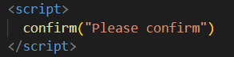

Alert: The alert () method in JavaScript is used to display a virtual alert box. It is mostly used to give a warning
message to the users. It displays an alert dialog box that consists of some specified message (which is optional)
and
an OK button. When the dialog box pops up, we have to click "OK" to proceed.
Code:
Output:
Prompt: A prompt box used for asking the user to enter dynamic values. After entering a value, either click the OK
button or Cancel button to take necessary action. If you click OK or enter, then the value read from user input into
our code.
Code:
Output:
Confirm: The JavaScript confirm () method displays a specified message in a dialog box, containing OK and CANCEL
buttons. A confirm box is used to accept or verify something.
Code:

Output